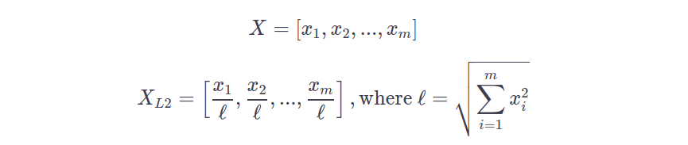

Normalizing Data
Chapter Goals:
• Learn how to apply L2 normalization to data
L2 normalization
So far, each of the scaling techniques we've used has been applied to the data features (i.e. columns). However, in certain cases we want to scale the individual data observations (i.e. rows). For instance, when clustering data we need to apply L2 normalization to each row, in order to calculate
cosine similarity scores. The
Clustering section will cover data clustering and cosine similarities in greater depth.
L2 normalization applied to a particular row of a data array will divide each value in that row by the row's
L2 norm. In general terms, the L2 norm of a row is just the square root of the sum of squared values for the row.

The above formula demonstrates L2 normalization applied to row
X to obtain the normalized row of values,
XL2.
In scikit-learn, the transformer module that implements L2 normalization is the
Normalizer.
The code below shows how to use the
Normalizer.
~~~~~~~~~~~~~~~~~~~~~~~~~~~~~~~~~